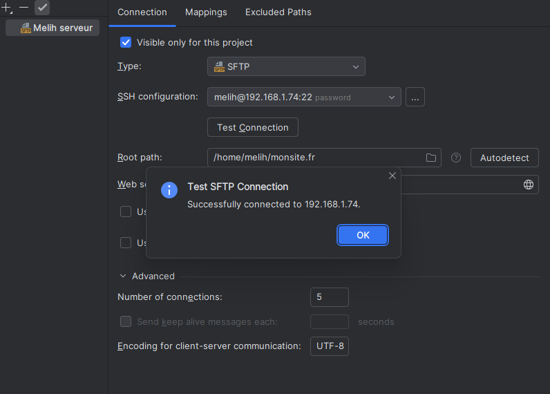

Pour déployer un site Web, il faut d'abord configurer une connexion SSH pour permettre un transfert sécurisé des fichiers. Ensuite, dans WebStorm, on crée une configuration SFTP en renseignant l'adresse IP ou le nom de la machine, le nom de l'utilisateur (dans ce cas, le compte permettant l'accès au serveur), le mot de passe, et en vérifiant la configuration pour s'assurer qu'elle fonctionne correctement. Cette configuration peut être réutilisée et testée à tout moment pour établir une connexion avec la machine virtuelle.
Installation & configuration de webstorm 
Le répertoire principal de connexion doit être spécifié pour éviter d'accéder à la racine, ce qui pourrait entraîner des problèmes de permissions. Un mapping est configuré pour indiquer comment les dossiers et fichiers locaux seront transférés vers le serveur distant. Il est aussi possible de définir un compte par défaut dans le mapping, en spécifiant le répertoire distant dans lequel les fichiers seront envoyés. Une option appelée "automatic upload" peut être activée pour envoyer automatiquement les fichiers dès qu'ils sont enregistrés localement.
Une fois les fichiers déployés, il est crucial de vérifier que le site est correctement configuré et que les modifications sont bien envoyées au serveur. Dans WebStorm, l'onglet "remote" permet de visualiser les fichiers présents sur le serveur distant et de les déployer manuellement via un clic droit et l'option "upload". Après le déploiement, une vérification permet de s'assurer que les fichiers ont bien été transférés et que la page de destination a été mise à jour.

Enfin, pour que les modifications locales soient automatiquement envoyées au serveur distant après enregistrement, il est nécessaire de configurer le serveur par défaut dans WebStorm. Une fois configuré, l'enregistrement d'un fichier entraîne un envoi automatique vers le serveur, rendant les modifications visibles après rechargement de la page sur le navigateur. Toutefois, bien que le serveur soit mis à jour, il peut être nécessaire de recharger manuellement certains composants de l'application pour voir les changements reflétés dans l'interface.